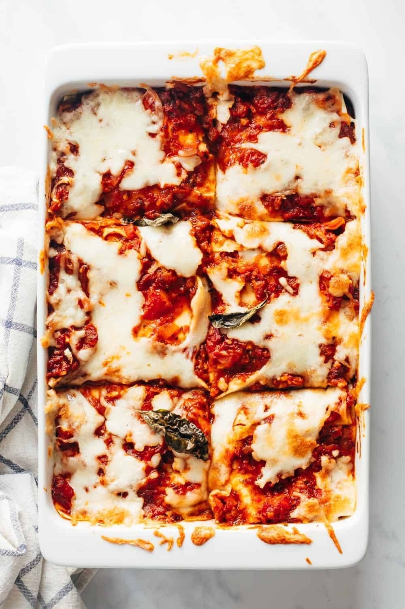

Vegetable Lasagne
Roasted Vegetable and Vegetarian Mince Lasagne
Ingredients
- Lasagne Sheets
- Tinned Chopped Tomatoes 🍅
- Courgette 🥒
- Aubergine 🍆
- Red Pepper 🫑
- White Onion 🧅 & Garlic 🧄
- Mixed Herbs🌿
- Milk 🥛
- Flour
Prep Time: 30 mins
Cook Time: 45 mins
Method
- Roughly chop the vegetables and roast for 20 minutes at 180 degrees
- Chop and sautee the onion and garlic
- Add the quorn mince and mixed herbs, and fry for 5 minutes
- Add the tinned tomatoes and cook for 10 minutes
- Once cooked add the roast vegetables and set aside
- While the sauce cooks start your bechamel by frying the butter and flour
- slowly ass the milk, mixing with a wooden spoon
- Stir in the cheese, nutmeg and salt and pepper to taste
- Layer the lasagne in a dish: Sauce, Lasagne, Bechamel, repeate